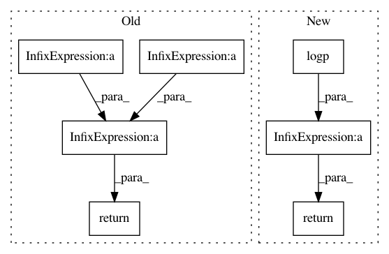

120e438fcd6357fc81a979d92b39b2bd7101dd34,pymc/step_methods/metropolis.py,BinaryMetropolis,astep,#BinaryMetropolis#Any#Any#,152
Before Change
docstring for astep
// Calculate probabilities of each value
logp_true = logp([True]*len(q0))
logp_false = logp([False]*len(q0))
p_true = exp(logp_true)
p_false = exp(logp_false)
// Stochastically set value according to relative
// probabilities of True and False
return (random(len(q0)) < p_true / (p_true + p_false)).astype(int)
After Change
switch_locs = where(rand_array<p_jump)
q[switch_locs] = True - q[switch_locs]
q_new = metrop_select(logp(q) - logp(q0), q, q0)
return q_new
def subst(a, val, index):
ap = a.copy()
ap[index]=val
In pattern: SUPERPATTERN
Frequency: 3
Non-data size: 7
Instances
Project Name: pymc-devs/pymc3
Commit Name: 120e438fcd6357fc81a979d92b39b2bd7101dd34
Time: 2013-05-05
Author: chris.fonnesbeck@vanderbilt.edu
File Name: pymc/step_methods/metropolis.py
Class Name: BinaryMetropolis
Method Name: astep
Project Name: pymc-devs/pymc3
Commit Name: 62859ba05a9dff7677b6946077544bb9a224c8cc
Time: 2017-06-28
Author: maxim.v.kochurov@gmail.com
File Name: pymc3/variational/opvi.py
Class Name: Approximation
Method Name: logp_norm
Project Name: pymc-devs/pymc3
Commit Name: d3443536f3d4e39d5e0b8f90e1f9d0e25af77713
Time: 2013-05-06
Author: chris.fonnesbeck@vanderbilt.edu
File Name: pymc/step_methods/metropolis.py
Class Name: BinaryMetropolis
Method Name: astep